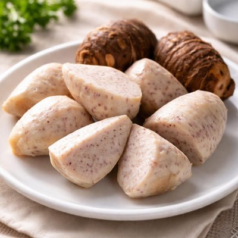

Isombe
A popular Rwandan dish made from finely pounded cassava leaves, slowly cooked with groundnuts and other ingredients.
View RecipeDiscover the traditional dishes, local ingredients and cooking traditions that make East African food unique.
East African cuisine reflects the agricultural traditions and food cultures of countries such as Rwanda, Uganda, Kenya and Tanzania. Many communities prepare meals using locally grown crops, fresh vegetables and ingredients passed down through generations.
Common foods include cassava, maize, beans, sweet potatoes, bananas and groundnuts. In Rwanda, cassava leaves are cooked with groundnuts to prepare Isombe, while Amateke is made from taro roots. In Uganda, Kawunga is commonly prepared using maize flour and served with vegetables or sauce. Kenyan and Tanzanian meals also include staples such as Ugali, Matoke and rice-based dishes such as Pilau.
A popular Rwandan dish made from finely pounded cassava leaves, slowly cooked with groundnuts and other ingredients.
View Recipe
A firm traditional staple prepared by mixing flour with hot water. It is commonly served with vegetables, beans or sauce.
View Recipe
A maize flour staple prepared by gradually mixing flour with hot water. It is served with beans, vegetables or meat sauce.
View Recipe
A traditional Rwandan food made from taro roots, which are peeled, boiled until tender and served with other dishes.
View Recipe